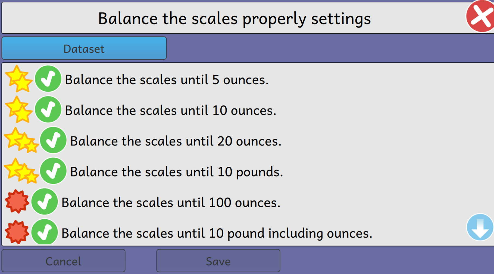

Season of KDE Final Report
SoK ended finally on 17th February 2020. I am happy to share that I have completed the project "Add multiple datasets to several activities" and passed the final evaluation!!!
As I have written a post a few days back to update about my work which you can find over here.
I was left with some work to complete as:
- To implement multiple datasets to balance scale with ounce.
- Test the activities on a different platform.
As these activities teach the child arthmetic operations by balancing the scales using pounds or ounce. So, I have added the datasets with five different configurations.
What after SoK???
The day I started contributing to this project I have faced a lot of difficulty in the beginning as this was one of my first open source to which I have contributed. But now I am familiar with all of the concepts, principles, and codebase of GCompris. I am looking forward to adding multiple datasets to other activities and add a new activity "Garbage Recycle" to GCompris.
Once again a big thanks to all of my mentors Johnny, Emmanuel, Timothee for all of their help and support. I would also like to thanks the KDE community for conducting such a great program every year.